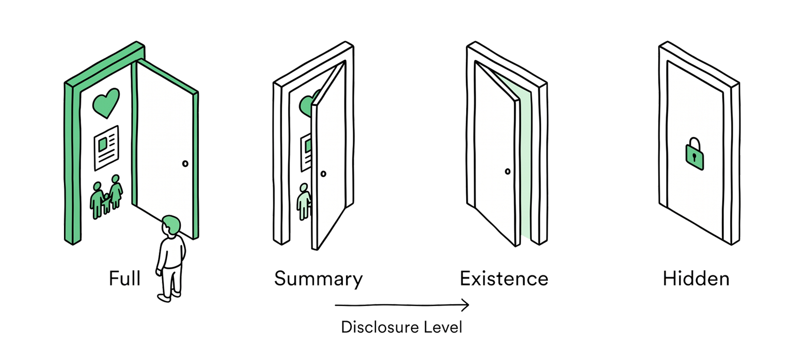
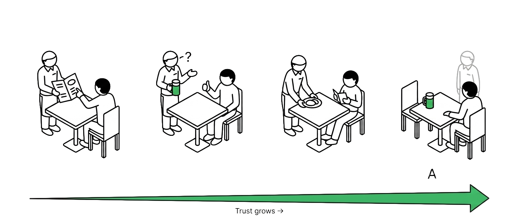
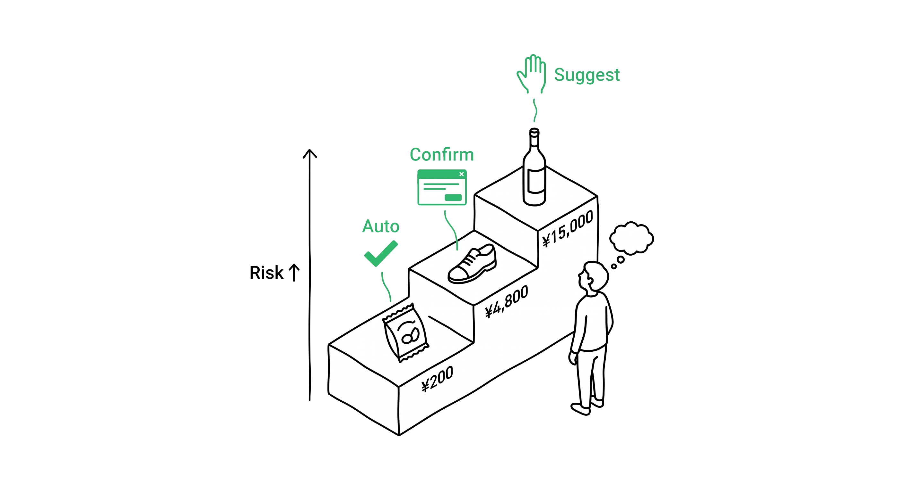
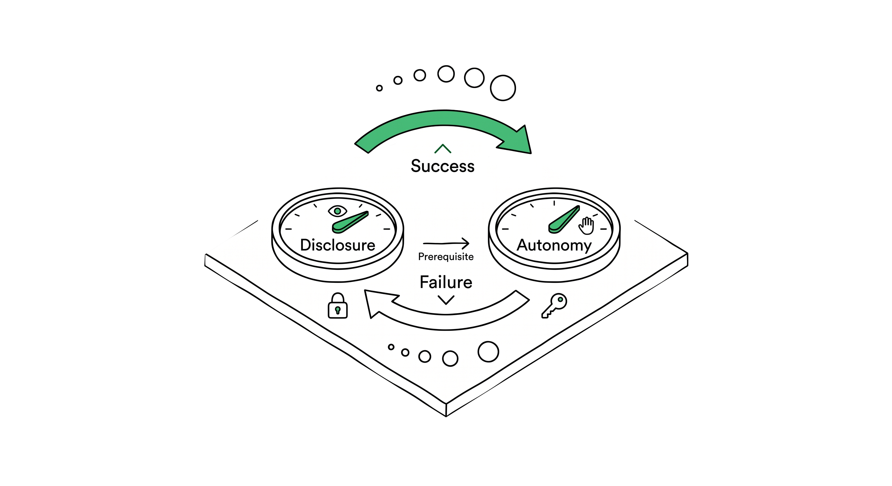
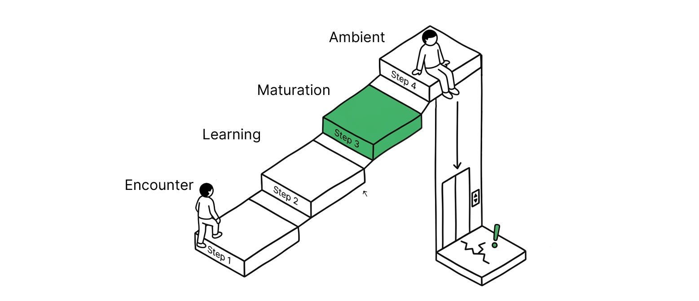
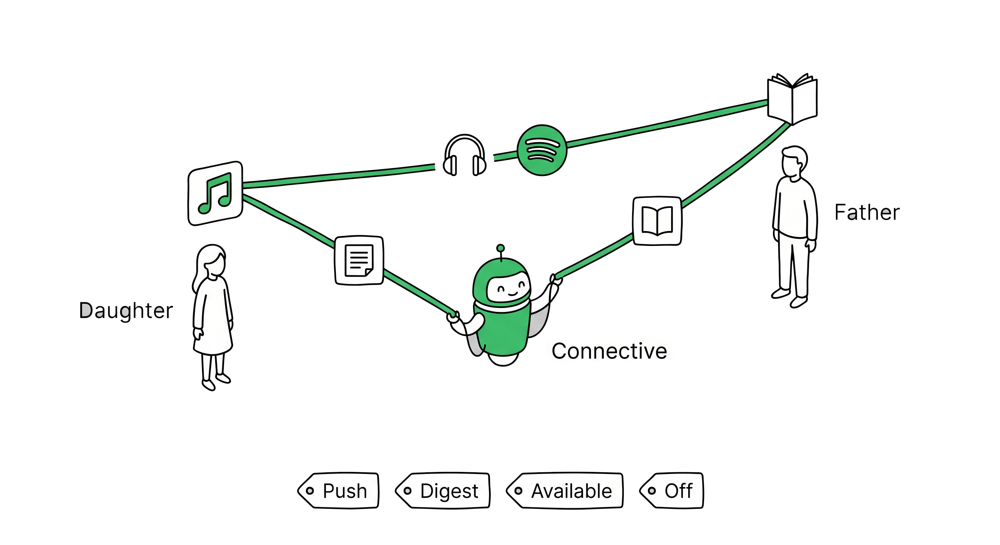

Context Grammar / Trust Design
Trust isn't built
in a day.
It takes six months to become a regular at a restaurant. Trust with AI grows the same way -- through track record and time. Context Grammar designs how that trust is built.
The Paradox
AI is capable. But you can't delegate yet.

ChatGPT can write. Gemini can plan your trip. But you don't want either of them spending your credit card without asking. Why? Because trust isn't there yet.
Think about the first time you walked into a restaurant. No matter how skilled the waiter looks, you don't say "chef's choice" on day one. You read the menu. You order one dish. If it's good, maybe next time you ask for a recommendation.
AI is the same. Capability alone is not enough. Trust is earned through accumulated results.
Every AI agent framework ships with autonomy controls -- levels, modes, permission tiers. The architecture is there. But none of them ask the question that comes before all of it: does the AI even know enough about you to act wisely?
Context Grammar's answer: Disclosure comes first. Autonomy follows. Always.
You can't delegate what you haven't disclosed. This is the rule. Everything else flows from it.
Dial 01
Disclosure Dial
Information flows in two directions -- protecting and connecting
Before the AI can act, it needs to know. But "what to share" isn't just about protecting your data. In families, there's a second direction: connecting each other's worlds.

Protect -- Controlling what you share
Think of a restaurant. A customer who tells the waiter about their allergies gets safer, better food. One who says nothing gets the standard menu. The Protective direction designs how much you reveal, in four levels.
01
Full
Share everything. Allergies, anniversary, budget, your daughter's hatred of cilantro. The AI can make deeply personalized decisions.
Medical AI: full health data shared
02
Summary
Share the outline only. "I have dietary restrictions" without specifying which. The AI knows enough to be cautious, not enough to optimize.
Fitness AI: "somewhat inactive" only
03
Existence
The AI knows there's something it doesn't know. It proceeds with extra caution at every step. Like a waiter who senses you're particular but hasn't been told why.
Travel AI: "has dietary needs" only
04
Hidden
The AI knows nothing. Generic responses only. The standard menu. No personalization. Safe. Impersonal. Sometimes exactly what you want.
Hobby AI: health data hidden
Per-domain control. You might set FULL disclosure for your health AI -- it needs your medications, family history, sleep patterns. But HIDDEN from social media AI. Same person, different boundaries. This isn't paranoia. It's architecture.
Connect -- Bridging each other's worlds
Here's a direction that no existing product addresses.
Real families discover each other's worlds and grow richer for it. Dad reads a manga on Kindle; his daughter reads it and tells him "volume 3 gets incredible." His son plays a piano BGM in Minecraft; Dad hears it and starts looking for it on Spotify. Today, all these discoveries depend on coincidence. Connective Disclosure turns coincidence into intentional bridging at the right granularity.
01
Push
Notify immediately when something new appears. The person actively wants to share.
Daughter's art posts: notify family immediately
02
Digest
A weekly summary. Distill too much into just the essence.
Wife's dance videos: 30-second highlights weekly
03
Available
Only when asked. The library is open but no notifications go out.
Dad's Kindle: daughter can browse when she wants
04
Off
This domain is not shared, even with family. Fully private.
Daughter's private playlists: not shared
Spotify's Family Mix is random blending. Connective Disclosure is "the song your son plays every day in Minecraft, placed in Dad's playlist" -- bridging with context. Existing products only have the Protective side. The Connective side exists in zero products today.
Disclosure Architecture
Information flows in three directions.
The Disclosure Dial doesn't just control "whether you tell the AI." Information flows in three distinct directions, each requiring different granularity and permissions.
Disclose
The Protective direction. What data do you share with the AI? Per domain, per AI service.
Health data: Full to medical AI, Hidden from hobby AI
Share / Filter
The Connective direction. The AI bridges interests between family members at appropriate granularity.
Son's Minecraft BGM: suggest to Dad's Spotify
Sync / Selective Disclosure
Controlled sharing with third parties. Based on the person's intent, the AI decides what to share, with whom, and when.
Medical info: Full to Mom, Summary to Dad, Hidden from school
Real Scenario
A daughter changes her pronoun in Gemini's profile settings.
AI doesn't "accelerate a decision." It offers choices about who, when, and at what granularity to share -- and waits until the person is ready. This is the third flow: selective disclosure through AI to others.
Design Note
Google Family Link, Samsung Kids Mode -- all use a binary "child / adult" model. The granularity of "full details to Mom, summary to Dad, hidden from school" exists in no platform today. The Disclosure Dial designs all three information flows in a unified model.
Dial 02
Autonomy Dial
How far the AI can go on its own -- four stages
The Disclosure Dial decided "what to share." Now comes "how much to delegate." Think about becoming a regular at a restaurant.

01
Suggest
AI presents options. Human decides everything. No assumptions, no shortcuts.
Restaurant: "Here's the menu. What would you like?"
Digital: "These shoes might work for you."
02
Confirm
AI proposes based on learned patterns. Human approves or corrects before execution.
Restaurant: "Your usual beer, shall I?"
Digital: "Adding milk to your order. OK?"
03
Notify
AI acts and informs. Human can override but doesn't need to initiate.
Restaurant: "Started your appetizer. The usual."
Digital: "Ordered your yogurt."
04
Auto
AI acts silently. Human intervenes only if something's wrong. The invisible stage.
Restaurant: Sit down, beer appears.
Digital: Netflix auto-play.
Three Forces, Not One Switch
The Autonomy Dial is not purely user-controlled. Three forces push and pull its position:
FORCE 01
Service Default
Netflix auto-play starts at Auto. Amazon purchases start at Confirm. Every service sets its own starting position based on stakes.
FORCE 02
AI Adjustment
Performance feedback moves the dial. Repeated corrections push autonomy down. Consistent accuracy pushes it up. The system earns its position.
FORCE 03
User Override
Explicit preference. "Approve all purchases over $50." "Stop asking about music." The human overrides everything.

Design Note
The Autonomy Dial isn't owned by the user alone. Service designers set the default, AI proposes adjustments based on track record, and users give final approval. All three forces overlap to determine the dial's position.
Core Rule
Disclosure ≥ Autonomy
Share first, delegate later. You can't automate what AI doesn't know.

Two dials. Four quadrants. One rule that governs everything.
A nut-allergy sufferer who tells the AI nothing but says "chef's choice." That's a system heading for a wall.
High Disclosure + High Autonomy
Seamless
The dream state. AI knows you deeply and acts accordingly. Groceries arrive before you notice you're low. The playlist matches your mood. The thermostat adjusts before you feel cold. Invisible, personal, right.
Low Disclosure + Low Autonomy
Safe but Impersonal
Privacy mode. AI can't do much because it doesn't know much. Every interaction starts from zero. Secure. Anonymous. Like talking to a vending machine.
High Disclosure + Low Autonomy
Informed but Manual
Training phase. AI knows your preferences but still asks before acting. Every recommendation is a proposal. You approve, correct, teach. Patient. Necessary. Temporary.
Low Disclosure + High Autonomy
Dangerous
The trap most AI falls into. Acting boldly with no context. An autopilot with no map. Confident, fast, and heading for a wall. Context Grammar makes this quadrant structurally impossible.
The relationship is bidirectional. Disclosure enables Autonomy. But successful Autonomy encourages more Disclosure. The AI orders your groceries perfectly three times in a row -- suddenly you're willing to share your yogurt preferences too. A single failure reverses both dials simultaneously.
LOOP 01
Disclosure Grows Autonomy
Share your food preferences. AI's suggestions improve. Trust builds. Delegation increases. Each disclosure unlocks more capable action.
LOOP 02
Success Grows Disclosure
The crutch disposal took 30 seconds. "Maybe I'll try listing the chair too." Accurate auto-orders. "Maybe I'll share my yogurt brand preference." Success begets more sharing.
LOOP 03
Failure Contracts Both
Wrong groceries arrive. Autonomy drops AND "I'm not sharing my preferences anymore." A privacy breach contracts both dials instantly. Failure breaks trust on both axes.
The critical insight: "You can't delegate what you haven't disclosed." Context Grammar enforces this structurally -- the system won't advance Autonomy beyond what Disclosure supports. The dangerous quadrant isn't just a warning. It's a wall.
Response Dynamics
Dynamic Friction
Even high trust has limits. Risk caps the autonomy ceiling.
Think about your favorite restaurant. The waiter brings your regular beer without asking. But a $150 bottle of wine? They always confirm. Even after years.
That's Dynamic Friction. Even when trust is high, high-risk actions retain friction.
| Action | Cost | Autonomy Ceiling |
|---|---|---|
| Convenience store snack | $5 | Auto |
| Usual shoe replacement | $50 | Confirm |
| Premium wine | $150 | Suggest always |
Cost isn't the only factor. Irreversibility determines friction strength.
Risk x Trust Matrix
Deleting an email draft is reversible. Canceling a flight isn't. The magnitude of risk constrains the Autonomy Dial's ceiling. No matter how much trust has been earned, some actions always require confirmation.
Social Exposure Reset
When guests arrive, both the Disclosure Dial and Autonomy Dial temporarily contract. The family calendar on the TV switches to a simplified view. When guests leave, everything returns to normal. A change in Social Exposure Token resets both Dials simultaneously.
Temporal Arc
Temporal Arc
Trust over time -- five phases, asymmetric transitions
Trust isn't configured. It's grown. Every AI relationship passes through the same phases -- and trying to skip one breaks the contract.

Phase 1 -- Week 1-2
Encounter
Everything is Suggest mode. The AI presents options and the human decides everything. Both sides are sizing each other up.
Phase 2 -- Month 1-2
Learning
Small successes accumulate. Low-risk domains shift to Confirm mode. "It got my coffee order right three times in a row."
Phase 3 -- Month 3-6
Maturation
Trust stabilizes. Routine decisions move to Notify and Auto. The human can predict what the AI will do. The AI handles the routine; humans focus on exceptions.
Phase X -- Can happen anytime
Crisis
A single significant failure drops the dial instantly. Building trust takes months. Losing it takes seconds. This is the asymmetric transition at the heart of trust design.
Phase 5 -- Month 6+
Ambient
The AI becomes invisible. You stop noticing it's there. Trust is the default. Attention goes only to exceptions. The most mature state.
The timeline is different for every domain. Music might reach Auto in a week. Healthcare might never get past Confirm. And that's fine. Trust isn't uniform -- it's calibrated.
Multi-Person Orchestration
Same AI. Same kitchen.
Four different trust relationships.

Consider the yogurt problem. A family of four shares the same fridge. The AI detects "yogurt is running low." But each person's expectations are completely different.
Wife
Primary User
Takao
Flexible User
Daughter
Explorer
Son
Minimal User
Same family, same fridge, same AI. But four people each running different Autonomy Dials, different Disclosure Dials, and different Substitution Modes simultaneously.
The Samsung Family Hub already stores family data -- allergies, dietary restrictions, per-member profiles for up to six people, Voice ID, Samsung Health integration. The infrastructure exists. What's missing is the trust layer -- the design language that turns stored data into calibrated autonomy, per person, per domain, over time.
Trust Breach
Trust Breach Recovery
What happens when AI makes a mistake
The moment AI gets it wrong will come. A dessert with nuts served to the regular with nut allergies. The problem isn't the failure itself. It's what happens next.
In the Temporal Arc's Crisis phase, the Autonomy Dial drops sharply. Auto becomes Confirm. Notify becomes Suggest. Multiple levels in an instant.
The Recovery Path follows three design principles:
01
Instant Retreat
The moment failure occurs, drop the related Autonomy Dial two levels. Return decision-making authority to the human immediately.
02
Accountability
Explain "why it went wrong." No black boxes. The restaurant says "a new staff member didn't check the allergy notes." Honest and specific.
03
Rebuilding Takes Time
Recovery takes longer than the original trust-building. Not a restart from Phase 1, but a more cautious re-entry from Phase 2. There are no shortcuts.
In restaurant terms: the day after serving the wrong dish to a regular with allergies, every single menu item goes back to confirmation mode. One dish at a time, trust is rebuilt. No shortcuts.
Design Principles
Six Principles of Trust Design
The foundational rules that govern how Context Grammar designs trust.
Disclosure ≥ Autonomy (Bidirectional)
Sharing comes first, delegation comes second. But successful delegation encourages more sharing. The Disclosure Dial sets the ceiling for Autonomy, while Autonomy's track record expands the scope of Disclosure.
Trust Is Earned Through Results
Take time. Only the accumulation of small successful actions justifies raising the Autonomy Dial. There are no shortcuts.
Risk Never Exceeds Trust
The Dynamic Friction principle. No matter how high trust climbs, high-risk actions retain confirmation. Even regulars confirm the $150 wine.
Failure Destroys Instantly
Asymmetric transition. Going up is stairs; going down is an elevator. Design with this asymmetry as a given. Always have a Recovery Path prepared in advance.
Protect and Connect
If you only design information sharing as "restriction," you get a purely defensive system. Disclosure has a second direction: bridging family members' worlds. Protect and connect at the same time.
Humans Remain the Final Authority
Escalation paths exist. No matter how high the Autonomy Dial goes, the human can always intervene. Full delegation without an override isn't trust design -- it's abdication of design.
Trust Is Designed,
Not Assumed.
Trust Design is one layer of a larger system. See how it connects to the Brain's memory architecture and the full Context Grammar framework.